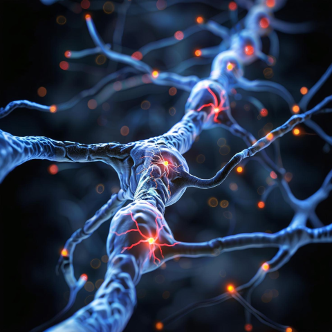
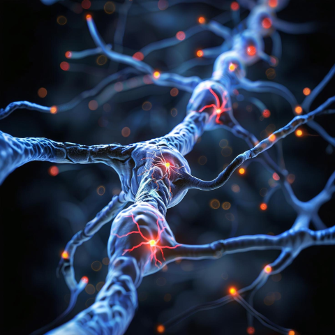

Best Neurology Hospital in RR Nagar Bangalore | Advanced Neurological Care in Rajarajeshwari Nagar
Comprehensive Neurology Services for Brain, Spine & Nerve Disorders
Rashtrotthana Hospital is home to one of the most advanced Neurosciences Departments in RR Nagar Bangalore, offering expert care for a wide range of brain, spine, and nerve problems. Recognized as the best neurology hospital in RR Nagar Bangalore, we provide precise diagnosis and personalized treatment for neurological conditions using advanced imaging techniques like MRI brain, CT scan, EEG scan, NCV test and EMG test.
With specialists like Dr. Kalyani Dilip Karkare and Dr. Jaidev S, our team ensures accurate diagnosis and compassionate care for every neurological concern - from nerve pain and neuro problems to complex spine issues and stroke care. We serve patients across Rajarajeshwari Nagar, RR Nagar, and other parts of Bangalore.

Expert Treatment for Neurological Conditions
We specialize in treating both acute and chronic conditions related to the nervous system, including:
- Migraine care and other headache treatments
- Seizure management and epilepsy care
- Stroke care with dedicated rehabilitation protocols
- Support for memory loss, balance issues, and muscle weakness
- Care for paralysis, tremors, tingling sensation, and numbness
- Evaluation of sleep disorders and vertigo treatment
- Neurological assessments for facial weakness, brain disorders, and neuro problems
Our department is committed to delivering holistic care, combining medical therapy with neuro-rehabilitation for long-term improvement.
Neuro Diagnostics in RR Nagar
Accurate diagnosis forms the foundation of effective neurological care. At Rashtrotthana Hospital, we offer advanced neuro diagnostics in RR Nagar including:
- MRI brain to assess structural abnormalities
- CT scan for emergency and trauma-related evaluation
- EEG scan to analyze brain wave activity
- EMG test to evaluate muscle health and nerve communication
- NCV test to detect nerve damage and its severity
These tools enable our specialists to detect complex conditions like spinal cord injury, neuralgia and trigeminal neuralgia, ensuring early and precise interventions.


 
